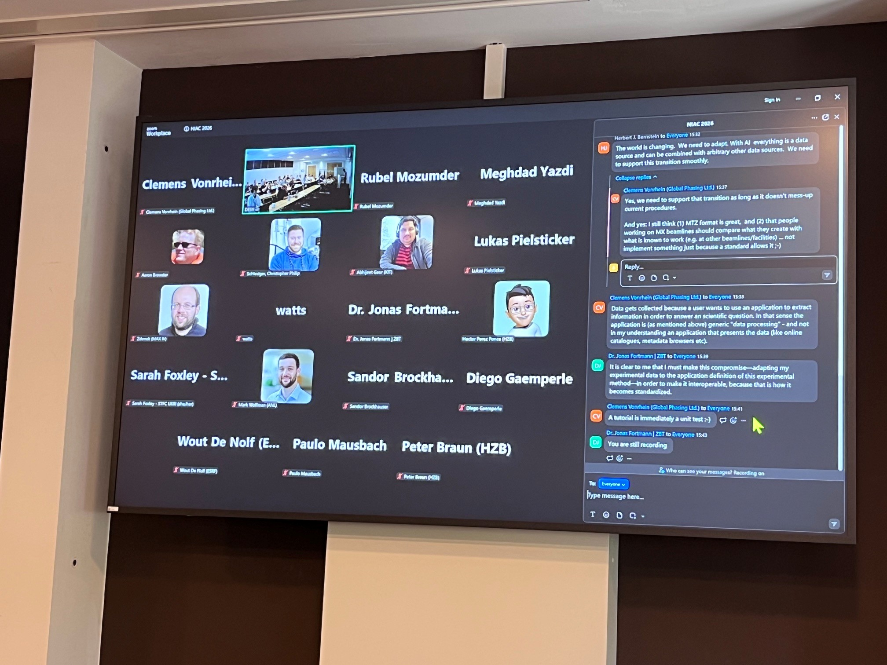
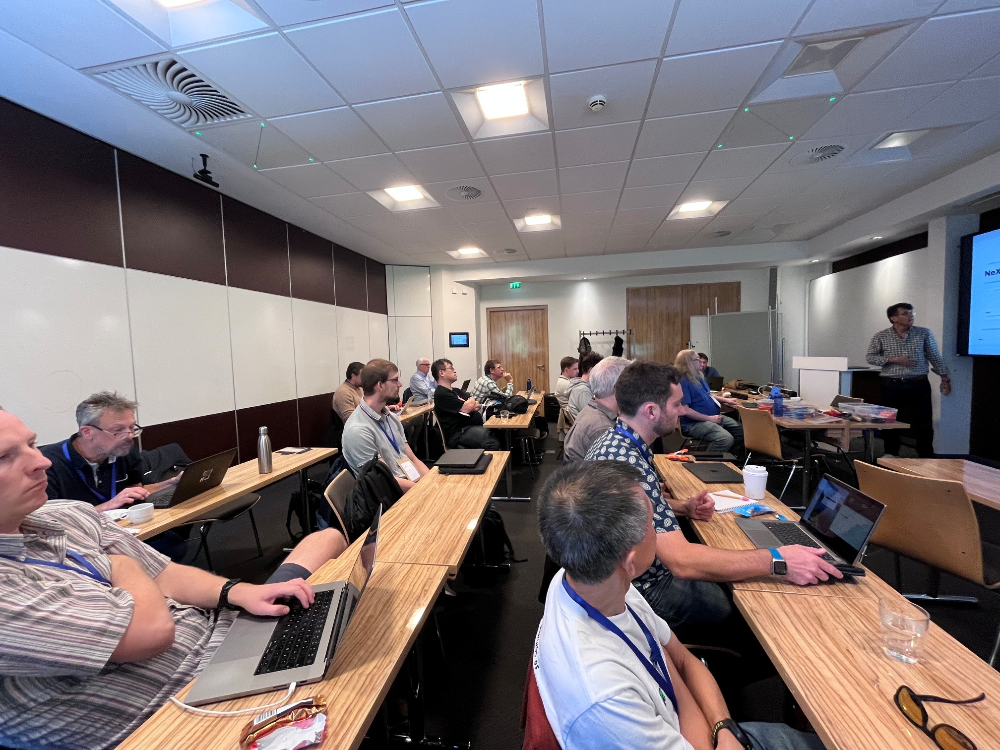
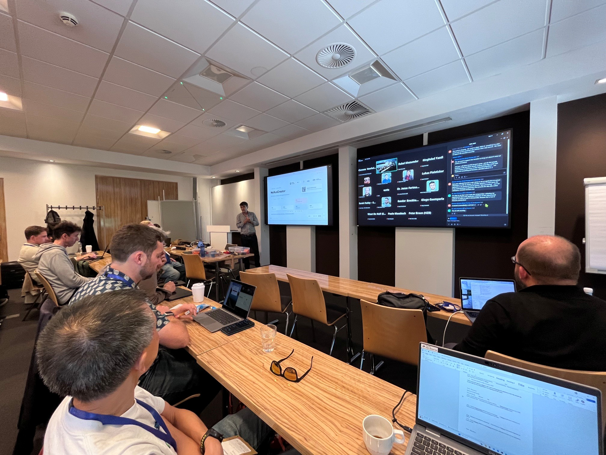
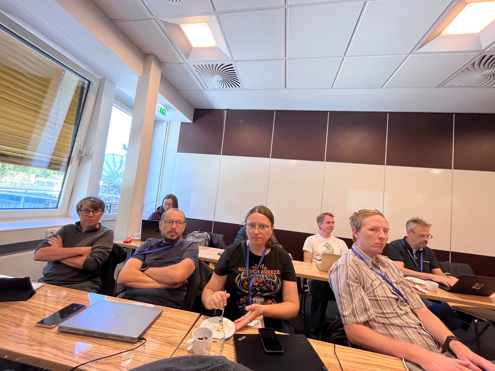
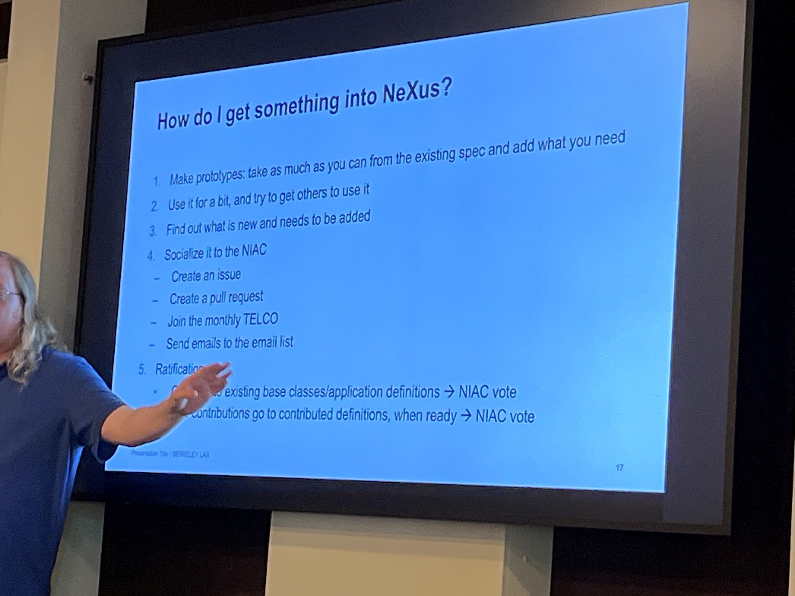

NIAC2026 Minutes¶
Participants:¶
NIAC in person: AB, SB, FdA, RB, HG, WdN, PM, MW, ZM, PC, RO, MO, (TM)
NIAC online: HB, BW, BB, GT
other participants:
Aaron Finke
Andre Costa
Renee Helfert
Christopher Philip Schleisinger
Celine Durniak
Erika McPhillips - SLAC
Mustafa Alzubi - SESAME
Marius Retegan - ESRF
George O’Neill - ESS
Mridul Sath - ESS
Diego Gaemperle - DECTRIS
Jonas Fortmann - ZBT
Iryna Lypova - FRM II / TUM
Jan Kotanski - DESY
Loas Kron-Batenburg - RDL IUCrData
Markus Kuehbach - FAIRmat
Rubel Mozumder - FAIRmat
Lukas Pilsticker - FAIRmat
Oleksii Turkot - EuXFEL
Paulo Mausbach - SIRIUS
Eva Lott - HZB
Peter Braun - HZB
Hector Perez Ponce - HZB
Sonal Patel - HZB
Sarah Foxley - ISIS, Mantid Team Lead (sarah.foxley@stfc.ac.uk)
Yannick Meinerzhagen - RWTH Aachen
Meghdad Yazdi - MAX IV
Jeremy Metz - MAX IV
Clemens Vonrhein - Global Phasing
Patrick Pereira - SOLEIL
Daniel Eriksson - Australian Synchrotron
Abhijeet Gaur - KIT
Florin Boariu - Uni Potsdam





NIAC2026 Minutes
Session A: Sept 25th 08:00 UTC¶
GON (ESS):
Status
JSON on top of NeXus;
only base classes;
users not understand the standard details;
JSON walk & SCIPP: NXtransformation viewer;
most used: NXevent_data, NXdata, NXlog, NXtextlog
plan:
NeXus in the center;
easy XML definition extensions;
smoother acquistion/writer,
better visualisation,
more NX contribution,
integration with McStas;
improvments for geometries
JK (DESY):
h5cpp, pninexus, pythin-pninexus writer
NeXpy viewer
AppDefs started to be used (NXmpes)
Need:
not all required fields are available, but it is now better because requirements are more relaxed
hdf5 performance issue with simultanious write and read
EL (HZB):
bluesky - NeXus (to NOMAD)
device definitions to NeXus
needs
mapping to App defs (pydentic model from NXDL)
referencing external asset documents
Tile integration
NXcollection -> NXbag?
MA (SESAME):
no NeXus yet, but hdf5 writer is accepting template which could be NeXus
aim: uniform data format (e.g. NeXus: NXxas, NXmonopd, NXtomo,…)
bottleneck: efficient support from NIAC can
Session B: Sept 25th 11:30 UTC¶
EMcP (SLAC):
data compression in NXmx (compression level and read is good, but not ideal)
question: any better and standardised way?
saprse data: could HDF5 lib cover it? what about looking at it as event data? or as data processing/reduction result?
LP (FAIRmat):
NeXus in NOMAD
NeXus Ontology to place NeXus Metadata into semantic ontology world
plan: more flexible experiment description, incl. multi-model experiments
need:
improve and clarify NXDL to describe semantics better
use of PIDs
link NeXus to external knowledge (e.g. ontologies)
multimodel experiments
how wide NeXus coverage shall be in terms of experiment techniques
IL (FRM II):
zoo of data formats
plan:
move to NeXus (and use it with Mantid, Miezepy, OpenHKL, Steca, Ufit, BerSANS…)
use NXtransofmration for complex geometry detector description
store simulation data in NeXus, too
also processed/reduced data should go to NeXus (like NX in Mantid)
questions:
how to best create new application definitions
shall we propose new definition or rather (miss)use not 100% fitting base classes
where to put unnecessary Nicos (DAQ) parameters? may be difficult to decide what is needed what is not.
shall we use master-file and original raw data to separate files
multi-modal experiments
how to use PIDs
new definitions shall have only proper description , or name must also be descriptive?
needs of the TAS (Triple Axis Spectroscopy) community? will name harmonisation needed?
next to new AppDefs, new base classes are also needed
PB (HZB):
SECoP (Sample Environment) -> NeXus, and now more generic needs for Operando (measured during operation) experiments
needs:
multi-modal experiments
hardware setup description
link to external knowledge
supporting ‘identifier’s for fields, too, not only for groups
questions/comments:
measurements may go parallel or sequential or over lapping
shall we have an NXmass_spectrometry or just describe things in NXenvironment? or somewhere else in the NeXus tree?
global timestamps for all subexperiments
global view (during the full experiment) for sensors/stages (not only in a sub technique)
instead of AppDefs, maybe base classes with runtime annotation with ontology links
how to link a definition (and not a data item) to an ontology concept?
what about chemical formula which also changes during operando
discussion:
what is a blocker with NeXus
availability of tools
how to use NeXus at all?
what to do when an application (architecture/structure) misses information
archiver format? interchange format?
sematic definition being independent from actual binary representation?
how to deal with only partial data?
how to extend the schema?
NXDL is a blocker; NYAML helps, but still uncomfortable unconventional rules e.g. PARTIAL names
generic concepts are not enough to know what is the role of a specific NXslit. use specific readable name? is it enough? external link to a specification or ontology concept? documentation in datafile? feature?…
what is the role of NIAC:
steer the definitions
also tutorials and examples (better documentation) of working with NeXus?
Session C: Sept 25th 14:00 UTC¶
HO (HZB):
NeXus Creator with NXDL guided placement of (meta)data
questions/proposals:
NXDL could have better descriptions/hints for what a specific definition is for. Maybe aliases (generic choice for the name)?
what is the preferred way to create a file? Master file with slaves or a big file with multiple entry or one big entry?
How to put description to a NeXus file (to document a specific element)?
No AppDef yet for operando_eis
YM (RWTH):
NX Appdef for TOF powder diffraction (POWTEX instrument for multidimensional measurements) following the structure of NXsnsevent
plan:
Mantid data analysis input and output results should also go back to the NeXus file
instrument parameters should be in NeXus
problem/question:
NeXus validation issues when creating a file manually (or with NXcreator)
cnxvalidate does not recognise partial names
NeXpy also shows error regarding the incorrect use of symbols
use of curved detectors?
MY (MaxIV):
NXazint[12]d (result of azimuthal integration type of data processing): detectors -> NeXus
plan:
NeXus for MPES techniques
questions:
what is the minimal necessary data in a NeXus file? Maybe: all what is needed by data analysis tools intended to be used by the community. Consult with local and external developers!
multiple subentries in a single entry. Shall an AppDef ask for Subentries with specific Application Definition?
MR (ESRF):
AppDef family for XAS to cover all kinds of XAS based experiments with light processing
ESRF DAQ produced h5 files can be processed to NXxas… files after data processing
AI can interpret perfectly these NeXus files
IXAS and XAS committee of IUCr are positive
problems with NXxas NXxasproc:
not used by the community
rigid structure not supporting the actual experiment types
why two separate AppDefs? this could fit in one file
questions/suggestions:
raw data could go to NXcollection
NXprocess fields could reference data in NXcollection
What to do with data in ESRF DAQ produced hdf5 files
how to manage multi detection experiments
how depreciation works?
how reference is modelled?
what about sample preparation? generic sample vs. actual sample?
discussion:
suggestion for new definitions
make prototypes (current status and additions)
try in the community
form a proposal
socialize it to NIAC
issue
PR
Telco
email lists
Ratification
Change -> NIAC vote
new contributions go to contributed definitions, when ready -> NIAC vote
New format: well accepted
potential new communication channels: discord, slac, matrix, zulib
examples and tutorials
mock data vs. real data
correct data should be available and maintained by the community
AI knows about NeXus and can also efficiently asked
Saturday Participants:¶
NIAC in person: AB, SB, FdA, HG, WdN, ZM, MW, RB, PC, RO, (TM)
NIAC online: HB, BW, GT
other participants: IL, JK, LP, SP, RM, GON
Session D: Sept 26th 08:00 UTC¶
Agenda points
NIAC2026 Project board https://github.com/orgs/nexusformat/projects/6/views/1
Ready for vote
Ready for final check
Ready
Litle to do
Medium to do
Major to do
Further wishes to be discussed
WdN: NXxas
HG: Operando related questions
RB: example repo and its visibility
FdA: community wishes, communication
MW: tutorials, documentation
LP: target attribute, ontology
ZM: cleaning the documentation, NXazint
AB: Has the NIAC the right size? Are we agile enough?
at the moment:
20 voting members at the moment
2/3 requirement: 13 votes
some inactive members
BW: more contributing members would be better, but inactive members are a bottleneck. Clear advertisement of the expectations. Maybe: setting up a new role those who want to be involved, but shallnot necessary hold a volting right: contributing NIAC members? (e.g. MK, LP, etc.) and have specific category for NIAC voting member.
AB: member list could also include the expertise and interests of specific contributing members.
AB: corum requirement should be reduced. 50%?
BW: rather separate the voting and non-voting members
AB: do we need a new NIAC responsibility?
now: spec, examples, validator
new: tutorial?
AB: do we miss medium level tutorials?
IL: working, real facility examples with explanation why they are put together as they are
LP: how to write new definition and how to contribute to NeXus
HG: how to start with something new, like pump-probe experiments
MW: separation between Using and Developing NeXus
RB: maybe an AI prompt on top of the documentation?
WdN: move away from XML and use pydantic
AB: cleaner and simplified documentation (e.g. doctree is full with irrelevant topics)
HB: SQL ontology is needed for human traceability
AB: let us create an issue for this
AB: make examples more visible
Examples on the main page
Examples for each App Def
More community examples (links?)
NeXus file interpretor (tool to connect NeXud groups/fields/attrs in a data file to Vocabulary Items of the NeXus definitions)
github action for checking definitions (and definitions changes) against known example data files
diataxis for examples and documentation in general
Code-Camp for it
NIAC Roles
Technical Manager
existing, but unfilled role for NAPI that is not there anymore
instead, an official validator could be added as a task for this role
RO: cnxvalidate is there but not developed any longer. Python API could be strengthened by more contributors (e.g. with pynxtools)
BW: single source of truth in NeXus is the definition in NXDL. It shall not be the validator which provides the truth. A validator is good, but it should follow the NXDL definitions. Can a single person be responsible for guaranteeing integrity between definitions and validation? Tech manager shall be responsible for the validation tool and we also need one for managing NXDL.
HB: NeXus connectivity to databases should be enabled. Database referential integrity should be maintained via normalisation.
SB,LP: NOMAD (in FAIRmat) solves the problem using mongoDB
HG: ontology, triplets and SPARQL is also a way (DAPHNE is looking at)
AB: we need a specific example to demonstrate the actual problem
Ontology Manager
it can be defined as an official role
ensures the relationship with semantic world
NIAC Executive Chair
FdA is volunteering
SB seconded
noone else volunteered
accepted (13/0/0)
NIAC Executive Secretary
RB is volunteering
RO seconded
noone else volunteered
accepted (13/0/0)
NIAC Definition Release Manager
PC is volunteering
RB seconded
noone else volunteered
accepted (13/0/0)
PR #1331
BW: allowing multiple mirrors, we may want to give an attribute for the role of the mirror
PC,SB: NXcomponent already allows the description of even complex beam paths, so even more than just a role can already now be described
GT: it is not clear why NXmonochromator exists at all if NXcomponent would be just enough
AB: put the questions into an issue
accepted (11/0/2)
Session E: Sept 26th 11:30 UTC¶
PR #1327
RO: why not an NXenvironment for (every) NXcomponent
LP: yes, but specializing an NXinstrument with special description provides a possibility for a recepie how to describe its environment
WdN: Warning! NXenvironment has NXcomponents, so an NXcomponent would have NXcomponents inside.
AB: just take it as is. Note that if a subcomponent has an environment already defined (e.g. Sample) than that this environment should be used instead.
BW: an environment should be external to the component it is providing environment for.
SB: Can an NXinstrument has another NXinstrument inside? Similarly, an NXcomponent another NXcomponent inside?
AB: We can support the specific requests as they are coming.
BW: +1, We can now add where it is now requested and if new request comes, we can then add there, too.
HG: Operando project is addressing this question, so we may wait until the request is clarified.
SP: as BW said, we can add it to both places
GON: be careful with its use
AB: go for it with clear description
RO,SB: specialisation of excluding the possibility to have an NXenvironment in /NXcomponent/NXsensor and NXactuator is not needed.
accepted (11/1/1)
PR #1330
accepted (13/0/0)
BW: documentation could be further clarified that both funtion and/or mechanism can be described here.
AB: this documentaion improvment does not need a special vote
PR #1654
SB: original aim was to warn people not to write free text, but rather reference existing documentation (e.g. ISO standard, Instrument manual, etc.) if possible. This is actually a general rule, and can be made clear as a general idea in the documentaion, rather then writing it everywhere.
accepted (12/0/1)
PR #1653
PC: Is is needed at Diamond and shall be used in NXdetector
RO: It is like a view definition. Is not this definition too specific?
PC: Indeed, if it needs to be extended, it can be done.
GON: signal and aux_signal in NXdata shall be consistent. Different downsampling requires multiple NXdata results.
What is in front of us:
AFM/SPM PR#1632
5 App Def
16 Base Classes
rendered documentation is under https://fairmat-nfdi.github.io/nexus_definitions/classes/contributed_definitions/spm-structure.html
XAS PR#1619
@target
Session F: Sept 26th 14:00 UTC¶
PR#1619 XAS (see also PR#1352)
AB: community needs NXatom and NXelement as separate concepts
SB: NXelement: why do we have long enum list with documentation repeating well known physics standard?
BW: NXauger_line/NXemission_line: why an enum list rather than a regexp?
WdN: auger lines do not seem to be a complete list
PC: The list in current base class does not support properly neutron spectroscopy
BW: next to element, a separate definition is needed for isotopes
AB: Would not it be enough to add mass number to NXelement?
HG: enumeration allows ontology mapping to external knowledge base.
NIAC suggestions and questions are posted to the PR
WdN: request was to keep it in contributed
AB: if community agrees, this could go to the standard base classes directly
accepted with the notes (12/0/1)
PR #1640 XAS
WdN: AppDefs are requested to stay contributed for the time being
NIAC discussed several topics and put suggestions into the PR
Sunday Participants:¶
NIAC in person: AB, SB, FdA, HG, WdN, ZM, RB, PC, RO, (TM), MW,
NIAC online: HB, BW, GT
other participants: IL, JK, LP, SP, RM, GON
Session G: Sept 27th 08:00 UTC¶
Constitutional Roles and Structure
Discussed Points
Validation tool descriptions should remain generic rather than mandating specific tools (such as
cnxvalidateorpunx), granting the manager flexibility to choose tools.Titles should use a consistent phrasing format (
Validation Technical Manager,NXDL Technical Manager,Ontology Technical Manager) rather than colons.The ontology role must oversee registration in registries (e.g., W3id), maintenance of terminology mappings, and schema mechanisms that allow files to reference external ontologies directly.
With 13 of 20 voting members present, changing the constitution required a unanimous vote to meet the two-thirds threshold.
Decisions
Approved standardized naming conventions for the technical manager roles.
Unanimously approved the constitutional amendment establishing the technical manager roles.
Heike was nominated, seconded, and unanimously elected as
Ontology Technical Manager.Wout De Nolf was nominated, seconded, and unanimously elected as
NXDL Technical Manager.Nomination and appointment for
Validation Technical Managerwas deferred for offline discussion.
XAS Definitions and
NXtrans(PR 1640)
Discussed Points
Soft X-ray beamlines utilize mirror/grating monochromators without crystal d-spacing, requiring an explicit resolving power/energy resolution parameter in
NXmonochromatorinstead of relying on crystal properties.Spectroscopy beamlines commonly output tabular ASCII data; using
NXcollectionorNXnotepermits raw ingestion without prematurely enforcing standard NeXus structures.Allowing broad MIME types in
NXnoteorNXprocessintroduces the danger of users storing arbitrary binary data or executable scripts inside NeXus files.
Decisions
Add an explicit resolving power / energy resolution field to the
NXmonochromatorbase class and mark it as recommended in the application definition.Maintain generic process descriptions while adding explicit notes advising users against embedding executable code.
Deprecation of Legacy
NXxasandNXxas_proc
Discussed Points
The legacy
NXxasapplication definition is outdated and broken, though a reference implementation exists in Sardana.Completely deleting definitions is overly disruptive, while maintaining identical class names in both the application and contributed directories causes conflicts in validation tools.
Marking old fields as deprecated and adjusting documentation rendering preserves backward compatibility while promoting modern definitions.
Decisions
Unanimously passed a resolution to deprecate and demote
NXxasandNXxas_procfrom application definitions to contributed definitions via a future pull request.Deprecated fields will be hidden by default in rendered documentation via collapsible sections.
New XAS definitions will be layered on top of the contributed classes.
Agenda and Session Planning
Discussed Points
Core scientific topics (STM, AFM, APM) should be prioritized ahead of procedural discussions due to several participants needing to depart early.
Decisions
Allocated the upcoming session to STM, AFM, and APM discussions.
Scheduled remaining procedural and structural topics for the subsequent session.
Communication Tools and Mailing Lists
Discussed Points
The existing mailing list structure is fragmented across
nexus,nexus-committee,nexus-tech, andbuild-server.build-serverandnexus-techare unmaintained and obsolete.Routine announcements and teleconferences require a broad audience, while committee voting requires restricted distribution.
Slack imposes pricing and archive limits without self-hosting options; Zulip is open-source, free for qualifying projects, supports threaded discussions, and provides mobile apps with notifications.
Decisions
Retire the
build-serverandnexus-techmailing lists.Standardize on
nexus@nexusformat.orgfor community announcements, meeting links, and open discussions.Restrict
nexus-committee@nexusformat.orgstrictly to committee business and official voting.Submit a pull request to update the NeXus manual and documentation to reflect the mailing list consolidation.
Accepted Greg’s proposal to set up and test a Zulip instance for the NeXus community.
Session H: Sept 27th 11:30 UTC¶
Handling Links and the
targetAttribute in NXDL/XSD
Discussed Points
The
targetattribute is currently present in the schema (nxdl.xsd), but there is confusion between XML attributes and NeXus HDF5 attributes.In HDF5 implementations, links are represented as
NXlinkobjects where the underlyingtargetattribute indicates a link target, but this implementation detail is largely hidden from the end user.Allowing abstract or generic fields with
targetattributes in base classes or application definitions creates validation issues (validators either fail or produce false positives).Direct usage and direct validation of such abstract link structures should be suppressed or marked with deprecation warnings.
Documentation should be rewritten to explain how field names and targets work in practice rather than using abstract computer science terminology.
Decisions
Agreed to add documentation and comments to the relevant pull request clarifying how fields and targets interact during validation without introducing breaking schema changes.
Exchanges
PR #1558 add target attribute to NXobject using new field super-type https://github.com/nexusformat/definitions/pull/1558
LP: started discussion going over the PR
WdN: type should be an enumerated type, because type could be any string at the moment.
LP: things like “target” are not defined in XSD file so a validator cannot validate it because it has no definition what a target link is
AB: changed the wording of Field names with all caps
LP: its fine to leave this open but it should be addressed.
RO: can any list of attributes be added to any field?
LP: lets leave this open and then let WdN finish his work on the XSD file
Mathematical Logic and Calibration Formulas in NeXus Files
Discussed Points
Need for Expression Storage: Detectors (such as Jungfrau) store 16-bit integer raw data where high bits represent gain/mask states. Converting raw data to calibrated data requires bit shifts, bitwise AND/OR, and arithmetic with calibration constants. Storing 16-bit integers with a formula saves massive storage compared to storing pre-computed 32-bit floats.
Security & Vulnerability Risks:
Allowing executable formulas or instruction sets creates severe security risks (e.g., remote code execution, macro-like exploits, AST escape vulnerabilities, or execution bombs).
Data files are routinely ingested by unvetted scripts and automated pipelines across facilities. Even if a safe whitelist/grammar is specified, third-party implementations may resort to unsafe methods (e.g.,
eval()).“NeXus shall not be code” — logic and data must remain strictly decoupled to avoid exposing facilities to malicious actors.
Alternative Approaches Discussed:
Implementing hardcoded, constrained classes (e.g.,
NXtransformationsapproach, or anNXmathclass with predefined binary operations).Utilizing the NeXus features repository (
NXentry.features) where vetted algorithms and IDs are referenced rather than carrying raw formulas in the file.Human-readable text descriptions in documentation fields rather than machine-executable formulas.
Decisions
Rejected the proposal to introduce executable formulas or mathematical grammars into NeXus definitions.
The corresponding issue will be closed as “not planned.”
Calibration and custom processing logic will be handled outside the core NeXus files (e.g., via HDF5 plugins or dedicated external analysis tools).
Exchanges
PR #711 MATH support in Nexus
AB: presents the issue with an example of calibrating data in NXmx
FD: ? could just use arrays to hardcode the calibration
BW: if you allow any kind of general instructions in Nexus, someone somewhere will just execute it without checking which could causes infections in lab systems,
AB: I cant write this specific equation in NXmx its too complicated, this calibration is a function of the detector so it is changing all the time,
GO: shares screen, AST example: arbitrary bit shifts could be a big problem
HB: we are in a new world, bad actors, have to take the position that nothing should ever get automatically executed by our files
SB: we have a solution in the nexus family already, we have a “features” repo, in there you can specify that this feature is “implemented this way”, in teh data file you specify the “feature ID”, these things can be used to check the integrity of your data file.
MW: AB who would use these expressions?
AB: anyone using a Jungfrau detector
HB: I know people currently working in cybersecurity, BW is right, AB is right its a need, you need a independent third party to review the problem and the solutions, and be patient until all involved need to be comfortable before moving forward.
FD: true, with FAIR we want reproducibility, and describing what was done is a possible risk.
BW: if we dont do anything at all, other people may start to standardize and make the mistake themselves so doing nothing is also a problem.
SB: BW is right we have this problem and we have had this problem and every 2 years we decide to do nothing,
AB: would like to close the issue as not planned
BW: so long as we keep the logic out of the data files we wont have to deal with the fallout of bad actors
Symbols and Array Dimensionality in Base Classes
Discussed Points
Redundant Symbols: An automated audit of NXDL definitions revealed many “singleton” symbols (symbols declared or applied to only a single field with no counterpart to validate equivalence against), creating clutter without functional benefit.
Overly Constrained Base Classes:
Defining rigid ranks in base classes (e.g., requiring rank 4 for
NXdetector/data) throws validator warnings against valid files using 1D, 2D, or variable-rank detectors.The core issue is fixing dataset dimensionality at the base-class level when detectors vary widely by experiment.
Base Classes vs. Application Definitions:
Symbols are primarily beneficial in application definitions where full experimental context and array equivalences between fields are established.
Application definitions composing multiple base classes face symbol collisions (e.g., two detector instances with different dimensions), as NXDL currently lacks namespacing or inheritance-override mechanisms for symbols.
Decisions
Clean up redundant singleton symbols from base classes and convert them into plain text descriptions in the documentation.
Existing validator errors stemming from base-class symbol mismatches are downgraded to informational messages.
Further review of the generated symbol-cleanup pull request was deferred to GitHub for community feedback.
Exchanges
PR #1659 Improvements to the use of symbols in NXDL Base Class Definitions
RO: presents case for why symbols should be removed from Base classes, PR was generated by changes suggested by Claude, motivated by outputs from the nexpy validator
WdN: The issue is the specification of dimensionality in base classes not the symbols, once you have rank then symbols are useful,
PC: I think this is an over simplification,
SB: you can have ‘i’ used in NXdetector and ‘i’ used in another base class and the two are different yet both used in an application definition
WdN: PR #1650, reused symbols do not cause collisions,
FD: please continue the discussion in GH issues
Session I: Sept 27th 14:00 UTC¶
NIAC in person: AB, HG, WdN, MW, RB, RO, FD,
NIAC online: GO, BW, HB
other participants: LP
Exchanges
AB: was approached be xtallographers to add NXdose PR # 1658
AB : presents #1658, gets feedback and makes comments in files of PR
HG: expressed support for adding this
very favorable response from comments
SPM and AFM Application Definitions and Base Classes
Discussed Points
Scope and Hierarchy: Scanning Probe Microscopy (SPM) encompasses Atomic Force Microscopy (AFM), Scanning Tunneling Microscopy (STM), low-temperature SPM, and force spectroscopy. A parent application definition (
NXspm) is designed to specialize into specific sub-techniques while sharing common base classes.Community Tools & Vendor Adoption: FAIRmat developed a converter tool mapping third-party vendor formats to NeXus. Commercial vendors are supportive in discussions but typically will not commit engineering resources to write exporters until definitions are formally accepted into the NeXus standard.
Strict Enumeration for Scan Types:
Scans (e.g., spiral, snake) require dedicated parameter groups depending on the chosen scan mode.
Keeping the
scan_typeenum closed ensures that new scan modes cannot be introduced at runtime without corresponding schema definitions for their parameters.
Sample Environment vs. Scan Definition: The SPM community groups sample stage positioning and scan trajectories into the sample environment group. While conventional NeXus separates physical environment (e.g., temperature) from motion/instrument control, SPM treats sample position as part of the local environment.
Coordinate Systems:
SPM experiments involve separate motions for the sample, the tip cantilever, and the piezo sensor, each reporting local XYZ displacements without explicit reference origins.
Because SPM lacks a beam, standard NeXus coordinate conventions (where $+Z$ points along the beam direction) cannot apply. Explicit
NXtransformationsand coordinate frames must be declared to define tip-sample relationships.
Decisions
Subgroups reviewed the base classes and submitted line-by-line feedback directly onto the GitHub pull request.
Retained strict enumerations for scan types where explicit parameter groups map to the scan method.
Required the authors to integrate explicit coordinate system definitions and
NXtransformationsinto the documentation to clarify tip, piezo, and sample references.Feedback was compiled for the FAIRmat and SPM community authors to revise before final merging.
Exchanges
PR #1632
LP: presents PR, scanning probe microscopy
SB: vendors are very interested but wont implement it until there is a standard
LP: break into smaller groups to tackle blocks of the changes for review
AB: what’s our procedure?
read the base classes and our subgroup and add comments to the pull request.
comments also allowed on the file itself
group returned:
comments have been left on GitHub
AB: we should look at the application definitions
LP: look at the application definitions
LP: goes through NXspm,
AB/RO: labs using nexus for things that do not have beams etc is a good thing
BW: we should be community minded, growth is great as long as our resources grow with it
LP: the SPM community like the idea of using nexus because its 30 yrs old,
AB: lets write a statement and vote on it inviting people from other communities to join the NIAC
LP: feels that people from the SPM/AFM community would be interested in joining if there was a way
NeXus Scope and Inclusion of Non-Beam Communities
Discussed Points
Mission Creep and Committee Bandwidth:
NeXus was conceived around large-scale beamline facilities (synchrotrons, neutron sources, XFELs) involving a source, beam, sample, and detector.
Expanding into non-beam techniques (SPM, AFM, electron microscopy, catalysis) risks making NeXus a generic repository for all scientific data, which a voluntary 20-member committee meeting biennially lacks the expertise and bandwidth to oversee.
Multimodal Science and Standard Ecosystem:
Cross-facility and multimodal workflows routinely combine techniques (such as AFM with crystallography or spectroscopy). NeXus provides an established ecosystem of HDF5 conventions, metadata dictionaries, APIs, and validation tools.
The scientific expertise comes from the incoming communities themselves, not solely from existing committee members.
Broadening adoption strengthens the case for funding agencies to support NeXus infrastructure.
External Standards and Duplicate Schemas:
External communities that already maintain functional schema ecosystems (e.g., JSON schemas or ontologies in catalysis or electron microscopy) should not be forced into redundant NeXus schemas. NeXus should focus on crosswalks and mappings rather than recreating existing external standards.
Representation: If non-beam communities wish to adopt NeXus, their representatives should be officially integrated into the NIAC (via voting or non-voting membership) to maintain and support their respective definitions.
Decisions
Resolution Approved: Proposed and unanimously voted in favor (11 votes in favor, 0 opposed) of the following official statement:
“NIAC is open to members from new interested communities from facilities and organizations that are not beam-related.”
Non-voting member roles will be used as an immediate vehicle to onboard representatives from non-beam techniques (such as FAIRmat and SPM representatives).
Exchanges
Statement put forward for a vote:
The proposal is that the NIAC is open to accept members from new interested communities from facilities/organizations that are not beam related.
votes:
11 votes for
0 votes against
0 abstain
Radiation Damage and
NXdose(Diamond Light Source Proposal)
Discussed Points
Need for Dose Tracking: Modeling radiation damage and absorbed dose is essential across macromolecular crystallography (MX), 4th-generation synchrotrons, cryo-EM, and spectroscopy to track beam-induced sample degradation.
Generalization vs. Technique-Specific Fields:
The proposed
NXdosebase class includes absorbed dose, peak dose, dose rate, dose targets, thresholds, and time series across scan points.However, the PR inappropriately included MX-specific and diffraction-specific parameters (such as goniometer angles, Garman limits, relative diffraction efficiencies, and diffraction wedge fractions) within the generic base class.
A base class must remain applicable to spectroscopy and other fields; MX-specific metrics should reside solely within the
NXmxapplication definition.
Sample Modeling: Tracking localized damage requires correlating the dose time series against a spatial/voxelized model of the sample as it undergoes beam exposure.
Decisions
Strong general consensus and support for incorporating dose and radiation damage tracking into NeXus.
Reviewers must ensure technique-specific properties (e.g., goniometer angles, MX-specific limits) are decoupled from the generic
NXdosebase class and moved intoNXmx.Authors will evaluate linking
NXdosewith other application definitions (e.g.,NXemand spectroscopy definitions).
Administrative and Meeting Operations
Discussed Points
Distributing teleconference links via plain text emails leads to recurring time-zone confusion (UTC conversions) and missed meetings.
Third-party scheduling tools (like Doodle) impose restrictive feature limits.
Decisions
The next monthly NIAC teleconference will take place in October.
Future meeting invitations will include standardized
.icscalendar file attachments to facilitate automatic calendar imports and time-zone conversion.
Closing out the session and end of NIAC meeting.